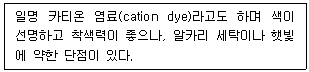
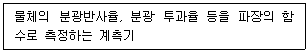
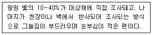
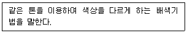
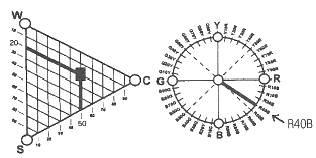

컬러리스트기사 (2020-09-26 기출문제)
1과목: 색채심리 마케팅
1. 일반적인 색채의 지각과 감정효과에 대한 설명으로 틀린 것은?
- 난색계열은 따듯해 보인다.
- 한색계열은 수축되어 보인다.
- 중성색은 면적감에 가장 많은 영향을 미친다.
- 명도가 낮은 색은 무거워 보인다.
(정답률: 94%)

2. 색채 마케팅 전략의 영향 요인 중 비교적 관계가 가장 적은 것은?
- 인구 통계적, 경제적 환경
- 잠재의식, 심리적 환경
- 기술적 자연적 환경
- 사회, 문화적 환경
(정답률: 55%)
3. 연령에 따른 색채 기호를 설명한 것으로 가장 거리가 먼 것은?
- 색채 선호는 인종, 국가를 초월하여 거의 비슷한 경향을 보인다.
- 노화된 연령층의 경우 저채도 한색 계열의 색채를 더 잘 식별할 수 있고 선호도도 높다.
- 지식과 전문성이 쌓여가는 성인이 되면서 점차 단파장의 색채를 선호하게 된다.
- 고령자들은 빨강이나 노랑과 같은 장파장 영역의 색채에 대한 선호도가 높아진다.
(정답률: 55%)
4. 기억색을 설명하는 것으로 옳은 것은?
- 대상의 표면색에 대한 무의식적인 추론에 의해 결정되는 색채
- 물체의 색채가 변하지 않고 그대로 유지된다고 지각하는 것
- 조명에 의해 물체색이 다르게 보이는 것
- 착시 현상에 의해 일어나는 색 경험
(정답률: 86%)
5. 생후 6개월이 지난 유아가 대체적으로 선호하는 색채는?
- 고명도의 한색계열
- 저채도의 난색계열
- 고채도의 난색계열
- 저명도의 난색계열
(정답률: 89%)
6. 소비자의 구매행동 중 소비자에게 가장 폭 넓게 영향을 미치는 요인은?
- 사회적 요인
- 심리적 요인
- 문화적 요인
- 개인적 요인
(정답률: 38%)
7. 색채 마케팅을 위한 마케팅의 기초이론에 대한 설명 중 틀린 것은?
- 마케팅이란 개인이나 집단이 상호 제품과 가치를 창출하고 교환하여 그들의 욕구를 충족시키는 사회적 관리의 과정이다.
- 마케팅의 기초는 인간의 욕구에서 출발하는데 욕구는 필요, 수요, 제품, 교환, 거래, 시장 등의 순환 고리를 만든다.
- 인간의 욕구는 매우 다양하므로 제품에 따라 1차적 욕구와 2차적 욕구를 분리키셔 제품과 서비스를 창출하는 것이 좋다.
- 마케팅의 가장 기초는 인간의 욕구(needs)로, 매슬로우는 인간의 욕구가 다섯 계층으로 구분된다고 설명하였다.
(정답률: 71%)
8. 비렌(Birren Faber)의 색채 공감각에서 식당 내부의 가구 등에 식욕이 왕성하도록 유도하기 위한 색채는?
- 초록색
- 노란색
- 주황색
- 파란색
(정답률: 83%)
9. 색채 심리 효과를 고려하여 색채 계획을 진행하고자 할 때 옳은 것은?
- 면적이 작은 방의 한 쪽 벽면을 한색으로 처리하여 진출감을 준다.
- 효과적이고 실용적인 배색으로 건물을 보호 유지하는데 도움을 준다.
- 아프트 외벽 색채 계획 시, 4cm×4cm의 샘플을 이용하여 계획하면 실제 계획한 색상을 얻을 수 있다.
- 노인들을 위한 제품의 색채 계획시 흰색, 청색 등의 색상차가 많이 나는 배색을 실시하여 신체적 특징을 배려한다.
(정답률: 42%)
10. 운송 수단의 색채 설계에 관한 배색 조건과 가장 거리가 먼 것은?
- 항상성과 안전성
- 계절의 조화
- 쾌적함과 안정감
- 환경의 조화
(정답률: 79%)
11. 유행색의 심리적 발생요인이 아닌 것은?
- 안전 욕구
- 변화 욕구
- 동조화 욕구
- 개별화 욕구
(정답률: 77%)
12. 소비자에 대한 심리접근법의 하나인 AIO법으로 측정할 수 없는 것은?
- 의견
- 관심
- 심리
- 활동
(정답률: 61%)
13. 풍토색에 대한 설명으로 틀린 것은?
- 특정지역의 기후와 토지의 색을 의미한다.
- 그 지역에 부는 바람과 내리 쬐는 태양의 빛과 흙의 색을 뜻한다.
- 지리적으로 근접하거나 기후가 유사한 국가나 민족의 색채 특징은 유사하다.
- 도로환경, 옥외광고물, 수목이나 산 등 그 지역의 특성을 전달하는 색채이다.
(정답률: 65%)
14. 색채 마케팅에서 시장세분화 전략으로 이용되며 인구 통계적 특성, 라이프 스타일, 특정 조건 등을 만족하는 집단을 대상으로 하는 마케팅은?
- 대중 마케팅
- 표적 마케팅
- 포지셔닝 마케팅
- 확대 마케팅
(정답률: 63%)
15. SD법의 첫 고안자인 오스굿이 요인분석을 통해 밝혀낸 3가지 의미공간의 대표적인 구성요인에 해당 되지 않는 것은?
- 평가요인
- 역능요인
- 활동요인
- 심리요인
(정답률: 41%)
16. 시장세분화(market segmentation)에 대한 설명이 틀린 것은?
- 시장세분화란 다양한 욕구를 가진 전체 시장을 일정한 기준하에 공통된 욕구와 특성을 가진 부분 시장으로 나누는 것을 말한다.
- 기억이 구체적인 마케팅 활동을 하는 세분시장을 표적시장(target market)이라 한다.
- 치약은 시장세분화의 기준 중 행동분석적 속성인 가격 민감도에 따라 세분화하는 것이 좋다.
- 자가용 승용차 시장은 인구통계학적 속성 중 소득에 따라 세분화하는 것이 좋다.
(정답률: 55%)
17. AIDMA 단계에서 광고 효과가 가장 크게 나타나는 단계는?
- 행동
- 기억
- 욕구
- 흥미
(정답률: 52%)
18. 색채 라이프 사이클 중 회사 간의 치열한 경쟁으로 가격, 광고, 유치경쟁이 일어나는 시기는?
- 도입기
- 성장기
- 성숙기
- 쇠퇴기
(정답률: 47%)
19. 소비자 행동에 영향을 미치는 사회적 요인 중 하나로 개인의 태도나 의견, 가치관에 영향을 미치는 집단은?
- 거주 집단
- 준거 집단
- 동료 집단
- 희구 집단
(정답률: 73%)
20. 색채조사 자료의 분석을 위한 기술 통계분석 설명으로 틀린 것은?
- 특징화시키거나 요약시키는 지수를 추출하기 위한 가장 단순한 방법은 빈도분포, 집중 경향치, 퍼센트 등이 있다.
- 모집단에 어떤 인자들이 있는지 추출하는 방법을 요인분석이라 한다.
- 어떤 집단의 요소를 다차원공간에서 요소의 분포로부터 유사한 것을 모아 군으로 정리하는 것을 군집분석이라 한다.
- 인자들의 숫자를 줄여 단순화하는 것을 판별분석이라 한다.
(정답률: 60%)
2과목: 색채디자인
21. 디자인 사조들이 대표적으로 사용하였던 색채의 경향이 틀린 것은?
- 옵아트는 색의 원근감, 진출감을 흑과 백 또는 단일 색조를 강조하여 사용한다.
- 미래주의는 기하학적 패턴과 잘 조화되어 단순하면서도 세련된 느낌을 준다.
- 다다이즘은 화려한 면과 어두운 면을 동시에 갖고 있으면서, 극단적인 원색대비를 사용하기도 한다.
- 데스틸은 기본 도형적 요소와 삼원색을 활용하여 평면적 표현을 강조한다.
(정답률: 37%)
22. 디자인의 조건 중 독창성에 대한 설명으로 틀린 것은?
- 디자이너의 창의적인 감각에 의하여 새롭게 탄생한다.
- 부분적으로 이미 존재하는 디자인을 수정 또는 모방하여 사용한다.
- 대중성이나 기능보다는 차별화에 중점을 두어야 한다.
- 시대양식에서 새로운 정신을 찾아 창의력을 발휘한다.
(정답률: 67%)
23. 전통적 4대 매체에 해당되지 않는 것은?
- 신문
- 라디오
- 잡지
- 인터넷
(정답률: 74%)
24. 윌리엄 모리스(William Morris)가 중심이 된 디자인 사조에 관계가 먼 것은?
- 예술의 민주화 · 사회화 주창
- 수공예 부흥, 중세 고딕 양식 지향
- 대량생산 시스템의 거부
- 기존의 예술에서 분리
(정답률: 60%)
25. 감정적이고 역동적인 스타일을 강조하고, 건축에서의 거대한 양식, 곡선의 활동, 자유롭고 유연한 접합 부분 등의 특색을 나타낸 시기는?
- 르네상스 시기
- 중세 말기
- 바로크 시기
- 산업혁명 초기
(정답률: 41%)
26. 도구의 개념으로 물건을 창조 및 디자인하는 분야는?
- 시각디자인
- 제품디자인
- 환경디자인
- 건축디자인
(정답률: 80%)
27. 인테리어 색채계획에 관한 내용으로 가장 관계가 없는 것은?
- 적용될 대상의 기능과 목적에 부합하여야 한다.
- 유사색 배색계획은 다채롭고 인위적으로 보이기 쉽다.
- 전체적인 이미지를 선정한 후 사용색을 추출하는 방법도 있다.
- 사용색의 소재별(재료적) 특성을 고려할 필요가 있다.
(정답률: 79%)
28. 색채계획에 앞서 색채를 적용할 대상을 검토할 때, 고려해야 할 조건에 대한 설명으로 틀린 것은?
- 거리감 – 대상과 사물의 거리
- 면적효과 – 대상의 차지하는 면적
- 조명조건 – 광원의 종류 및 조도
- 공공성의 정도 – 개인용, 공동사용의 구분
(정답률: 44%)
29. 어떤 목표에 도달하기 위해서 자연과 사회의 과정을 의도적으로 목적에 맞게 실용화하는 것은?
- 방법(method)
- 평가(evaluation)
- 목적지향성(telesis)
- 연상(association)
(정답률: 74%)
30. 21세기 정보화 및 다양한 미디어가 확산됨에 따라 멀티미디어 디자이너에게 요구되는 자질로 가장 거리가 먼 것은?
- 청각 정보의 시각화 능력
- 시청각 정보의 통합능력
- 추상적 개념이 구체화 능력
- 특정한 제품의 기술적 능력
(정답률: 64%)
31. 실내디자인에 대한 설명으로 틀린 것은?
- 건물의 내부에서 사람과 물체와 공간의 관계를 다루는 디자인이다.
- 인간 기본생활에 밀접한 부분인 만큼 휴먼 스케일로 취급되어야 한다.
- 선박, 자동차, 기차, 여객기 등의 운송기기 내부를 다루는 특별한 영역도 포함된다.
- 20세기에 들어서면서 건축물의 실내를 구조의 주체와 분리하여 내장한다는 의미를 지닌다.
(정답률: 60%)
32. 디자인의 속성에 대한 설명 중 틀린 것은?
- 기능이란 사물이 작용할 수 있는 능력이며 디자인의 가치면에서 보면 효용 또는 실용이라 해석할 수 있다.
- 디자인은 기능성과 심미성의 이원적 개념이 대립하거나 융합하면서 발전한다.
- 심미성이란 아름다움과 추함을 구별하여 아름다움의 본질을 찾아내는 것이다.
- 기능성과 심미성 중 하나를 선택해야 한다.
(정답률: 73%)
33. 멀티미디어의 조건으로 적절하지 않은 것은?
- 상호작용적이어야 한다.
- 디지털과 아날로그 형태로 생성, 저장, 처리된다.
- 다수의 미디어를 동시에 표현한다.
- 영상회의, 가상현실, 전자출판 등과 관련이 있다.
(정답률: 67%)
34. 일정한 목적에 도달하는데 적합한 대상 또는 행위의 성질을 말하며, 원하는 작품의 제작에 있어서 실제의 목적에 알맞도록 하는 것은?
- 합목적성
- 경제성
- 독창성
- 질서성
(정답률: 76%)
35. 게슈탈트의 그루핑 법칙과 관련이 없는 것은?
- 보완성
- 근접성
- 유사성
- 폐쇄성
(정답률: 56%)
36. 독일공작연맹, 바우하우스를 중심으로 한 모던 디자인의 경향으로 옳은 것은?
- 유기적 곡선 형태를 추구한다.
- 영국의 미술공예운동에 기초를 둔다.
- 사물의 형태는 그 역할과 기능에 따른다.
- 표준화보다는 다양성에 기초를 두었다.
(정답률: 50%)
37. '형태는 기능에 따른다' 라는 말을 한 사람은?
- 루이스 설리반
- 빅터 파파넥
- 윌리엄 모리스
- 모홀리 나기
(정답률: 57%)
38. 바우하우스 교육기관의 마지막 학장은?
- 한네스 마이어(Hannes Meyer)
- 윌터 그로피우스(Walter Gropius)
- 미스 반 델 로에(Mies van der Rohe)
- 요셉 앨버스(Joseph Albers)
(정답률: 48%)
39. 타이포그래피(typography)를 가장 잘 설명한 것은?
- 그림형태로 이루어진 글자의 조형적 표현
- 광고에 나오는 그림의 조형적 표현
- 글자에 의한 모든 커뮤니케이션의 조형적 표현
- 상징에 의한 커뮤니케이션의 조형적 표현
(정답률: 66%)
40. 생태학적 디자인 원리와 거리가 먼 것은?
- 환경 친화적인 디자인
- 리사이클링 디자인
- 에너지 절약형 디자인
- 생물학적 단일성을 강조하는 디자인
(정답률: 76%)
3과목: 색채관리
41. 고체성분의 안료를 도장면에 밀착시켜 피막 형성을 용이하게 해주는 액체 성분의 물질은?
- 호분
- 염료
- 전색제
- 카티온
(정답률: 73%)
42. 다음 중 보조표준광의 종류가 아닌 것은?
- D50
- D55
- D65
- B
(정답률: 48%)
43. 프린터를 이용해 출력한 영상물의 색 표현에 영향을 주는 것을 가장 거리가 먼 것은?
- 잉크 종류
- 종이 종류
- 관측 조명
- 영상 파일 포맷
(정답률: 53%)
44. CCM(Computer Color Matching) 조색의 특징이 아닌 것은?
- 광원이 바뀌어도 색채가 일치하는 무조건 등색을 할 수 있다.
- 발색에 소요되는 비용을 정확히 산출할 수 있으며 경제적이다.
- 재질과는 무관하므로 기본재질이 변해도 데이터를 새로 입력할 필요가 없다.
- 자동 배색 시 각종 용인 들에 의하여 색채가 변할 수 있으므로 발색공정에 대한 정확한 파악과 철저한 관리가 선행되어야 한다.
(정답률: 53%)
45. 디지털 색채변환방법 중 회색요소교체라고 하며, 회색부분 인쇄 시 CMY 잉크를 사용하지 않고 검정 잉크로 표현하여 잉크를 절약하는 방법은?
- 포토샵을 이용한 컬러변환
- CMYK 프로세스 색상분리
- UCR
- GCR
(정답률: 44%)
46. 표준백색판에 대한 설명으로 틀린 것은?
- 충격, 마찰, 광조사, 온도, 습도 등의 영향을 받지 않고, 표면이 오염된 경우에도 세척, 재연마 등의 방법으로 오염들을 제거하고 원래의 값을 재현시킬 수 있는 것으로 한다.
- 분광 반사율이 거의 0.7 이상으로, 파장 380nm~700nm에 걸쳐 거의 일정해야 한다.
- 균등 확산 반사면에 가까운 확산 반사 특성이 있고, 전면에 걸쳐 일정해야 한다.
- 표준백색판은 절대 분광 확산 반사율을 측정할 수 있는 국가교정기관을 통하여 국제표준으로의 소급성이 유지되는 교정값을 갖고 있어야 한다.
(정답률: 56%)
47. 컬러 비트 심도에 대한 설명으로 틀린 것은?
- 10비트는 1024개의톤 레벨을 만들 수 있다.
- 비트 심도의 수가 클수록 표현할 수 있는 색의 수가 많아진다.
- 스캐너는 보통 10비트, 12비트, 14비트의 톤 레벨을 갖는다.
- RGB 영상에 채널별 8비트로 재현된 색의 수는 사람이 인지할 수 있는 색상의 수보다 적다.
(정답률: 54%)
48. LCD와 OLEC 디스플레이의 컬러 특성에 대한 설명으로 틀린 것은?
- LCD 디스플레이 고유의 화이트 포인트는 백라이트의 색온도에 좌우된다.
- OLED 디스플레이가 LCD보다 더 어두운 블랙 표현이 가능하다.
- LCD 디스플레이의 재현 색역은 백라이트 특성에 영향을 받는다.
- OLED 디스플레이의 밝기는 백라이트의 특성에 영향을 받는다.
(정답률: 52%)
49. 다음 설명에 가장 적합한 염료는?

- 반응성 염료
- 산성 염료
- 안료 수지 염료
- 염기성 염료
(정답률: 46%)
50. 표면색의 시감비교 시 관찰자에 대한 설명이 틀린 것은?
- 관찰자는 미묘한 색의 차이를 판단하는 능력을 필요로 한다.
- 관찰자가 시력보정용 안경을 사용하는 경우에는 안경렌즈가 가시 스펙트럼 영역에서 균일한 분광투과율을 가져야 한다.
- 눈의 피로에서 오는 영향을 막기 위해서는 진한 색 다음에는 바로 파스텔 색을 보는 것이 효율적이다.
- 밝고 선명한 색을 비교할 때 신속하게 비교결과가 판단되지 않으면 관찰자는 수 초간 주변시야의 무채색을 보고 눈을 순응시킨다.
(정답률: 75%)
51. 다음 색차식 중 가장 최근에 표준 색차식으로 지정된 것은?
- ΔE00
- ΔE*ab
- CMC(1:c)
- CIEDE94
(정답률: 26%)
52. KS A 0065 기준에 따르는 표면색의 시감 비교 환경에서 육안 조색을 진행 할 때에 관한 설명으로 옳은 것은?
- 인간의 눈을 기준으로 조색하는 방법이므로 CCM 결과보다 항상 오차가 심하고 정밀도가 떨어진다.
- 숙련된 컬러리스트의 경우 육안 조색을 통해 조명 변화에 따른 메타메리즘을 제거할 수 있다.
- 상황에 따라서는 자연주광 조건에서 육안 조색을 해도 된다.
- 현장 표준색보다 2배 이상 크게 시료를 제작하여 비교하여야 정확한 색 차이를 알 수 있다.
(정답률: 29%)
53. 다음 설명에 해당하는 장비의 명칭은?

- 색채계(colorimeter)
- 분광광도계(spectrophotometer)
- 분광복사계(spectroradiometer)
- 광전 색채계(photoelectric colorimeter)
(정답률: 74%)
54. 다음 설명에 해당하는 조명방식은?

- 반직접조명
- 반간접조명
- 국부조명
- 전반확산조명
(정답률: 64%)
55. 혼색에 대한 설명으로 틀린 것은?
- 2종류 이상의 색 자극이 망막의 동일지점에 동시에 혹은 급속히 번갈아 투사하여 생기는 색자극의 혼합을 가법혼색이라 한다.
- 감법혼색에 의해 유채색을 만들어 낼 수 있는 2가지 흡수 매질의 색을 감법혼색의 보색이라 한다.
- 색 필터 또는 기타 흡수 매질의 중첩에 따라 다른 색이 생기는 것을 감법혼색이라 한다.
- 가법혼색에 의해 특정 무채색 자극을 만들어낼 수 있는 2가지 색 자극을 가법혼색의 보색이라 한다.
(정답률: 29%)
56. 다음 중 RGB 컬러 프로파일과 무관한 장치는?
- 디지털 카메라
- LCD 모니터
- CRT 모니터
- 옵셋 인쇄기
(정답률: 70%)
57. 색채의 소재에 관한 설명이 틀린 것은?
- 색소는 고유의 특징적인 색을 지닌다.
- 안료는 착색하고자 하는 소재와 작용하여 착색된다.
- 염료는 용해된 액체 상태에서 소재에 직접 착색된다.
- 색소는 사용되는 방법과 물질의 상태에 따라 크게 염료와 안료로 구분한다.
(정답률: 49%)
58. 색에 관한 용어 중 표면색에 대한 설명이 옳은 것은?
- 광원에서 나오는 빛의 색
- 빛을 반사 또는 투과하는 물체의 색
- 빛을 확산 반사하는 불투명 물체의 표면에 속하는 것처럼 지각되는 색
- 깊이감과 공간감을 특정 지울 수 없도록 지각되는 색
(정답률: 47%)
59. 컬러 측정 장비를 이용해 테스트 컬러의 CIELAB값을 계산하고자 할 때 반드시 필요한 값은?
- 조명의 조도
- 조명의 색온도
- 배경색의 삼자극치
- 기준 백색의 삼자극치
(정답률: 42%)
60. 플라스틱 소재의 특성 중 틀린 것은?
- 반영구적인 내구력 때문에 환경오염을 일으킬 수 있다.
- 옥외에서 사용되는 경우 변색이나 퇴색될 수 있다.
- 방수성, 비오염성이 뛰어나고 다른 재료와의 친화력이 좋다.
- 가벼우면서 낮은 강도로 가공과 성형이 용이하다.
(정답률: 26%)
4과목: 색채지각론
61. 전자기파에 대한 설명 중 옳은 것은?
- X선은 감마선 보다 짧다.
- 자외선의 파장은 적외선 보다 짧다.
- 라디오 전파는 적외선 보다 짧다.
- 가시광선은 레이더 보다 길다.
(정답률: 46%)
62. 빛에 대한 눈의 작용에 관한 설명 중 틀린 것은?
- 밝은 상태에서 어두운 상태로 바뀔 때 민감도가 증가하는 것을 명순응이라 하고, 그 반대 경우를 암순응이라 한다.
- 밝았던 조명이 어둡게 바뀌면 처음에는 아무것도 보이지 않다가 시간이 지나면서 대상을 지각할 수 있게 되는데 이는 어둠속에서 보내는 시간이 길어지면서 민감도가 증가하기 때문이다.
- 간상체와 추상체는 빛의 강도가 서로 다른 조건에서 활동한다.
- 간상체 시각은 약 507nm의 빛에 가장 민감하며, 추상체 시각은 약 555nm의 빛에 가장 민감하다.
(정답률: 58%)
63. 색조의 감정효과에 관한 설명 중 틀린 것은?
- pale 색조의 파랑은 팽창되어 보인다.
- grayish 색조의 파랑은 진정효과가 있다.
- deep 색조의 파랑은 부드러워 보인다.
- dark 색조의 파랑은 무겁게 느껴진다.
(정답률: 65%)
64. 헤링이 주장한 4원색설 색각이론 중에서 망막의 광화학 물질 존재를 가정한 내용과 관련이 없는 것은?
- 노랑-파랑물질
- 빨강-초록물질
- 파랑-초록물질
- 검정-흰색물질
(정답률: 60%)
65. 가시광선 중에서 가장 시감도가 높은 단색광의 색상은?
- 연두
- 파랑
- 빨강
- 주황
(정답률: 28%)
66. 병치혼색과 가장 거리가 먼 것은?
- 직물의 무늬
- 모니터의 색재현 방법
- 컬러 인쇄의 망점
- 맥스웰의 색 회전판
(정답률: 52%)
67. 다음 중 심리적으로 흥분감을 가장 많이 유도하는 색은?
- 난색 계열의 저명도
- 한색 계열의 고명도
- 난색 계열의 고채도
- 한색 계열의 저채도
(정답률: 80%)
68. 색팽이를 회전시켜 무채색으로 보이게 하려 한다. 색면을 2등분하여 한쪽에 5Y 8/12의 색을 칠했을 때 다른 한 면에 가장 적합한 색은?
- 5R 5/14
- 5YR 8/12
- 5PB 5/10
- 5RP 8/8
(정답률: 67%)
69. 혼색의 원리와 활용 사례 연결이 옳은 것은?
- 물리적 혼색 – 점묘화법, 컬러사진
- 물리적 혼색 – 무대조명, 모자이크
- 생리적 혼색 – 점묘화법, 레코드판
- 생리적 혼색 – 무대조명, 컬러사진
(정답률: 45%)
70. 먼저 본 색의 영향으로 나중에 보는 색이 다르게 보이는 대비는?
- 동시대비
- 계시대비
- 한난대비
- 연변대비
(정답률: 79%)
71. 색채에 대한 설명으로 틀린 것은?
- 색채는 감각기관인 눈을 통해서 지각된다.
- 색채는 물체라는 개념이 따라다니기 때문에 지각적 요소가 포함되어 있다.
- 색채는 빛 자체를 심리적으로만 표시하는 색자극이다.
- 색채는 색을 경험하는 것으로 생겨난다.
(정답률: 69%)
72. 혼색에 대한 설명으로 옳은 것은?
- 병치혼색의 경우 혼색의 명도는 최대 면적의 명도와 일치한다.
- 컬러 인쇄의 경우 일부분을 확대하여 보면 점의 색은 빨강, 녹색, 파랑으로 되어 있다.
- 색유리의 혼합에서는 감법혼색이 나타난다.
- 중간혼색은 감법혼색의 영역에 속한다.
(정답률: 45%)
73. 색자극의 순도가 변하면 색상이 다르게 보이는 색채지각효과는?
- 맥콜로 효과
- 애브니 효과
- 리프만 효과
- 베졸트 브뤼케 효과
(정답률: 52%)
74. 잔상과 관련된 다음 예시 중 성격이 다른 것은?
- 수술복
- 영화
- 모니터
- 애니메이션
(정답률: 75%)
75. RGB 시스템을 사용하지 않는 디지털 디바이스는?
- Laser Printer
- LCD Monitor
- OLED Monitor
- Digital Camera
(정답률: 60%)
76. 다음 중 흑체복사에 속하는 것은?
- 태양광
- 인광
- 레이저
- 케미컬라이트
(정답률: 49%)
77. 색채의 감정적인 효과에서 온도감에 주로 영향을 받는 요소는?
- 색상
- 채도
- 명도
- 면적
(정답률: 59%)
78. 양성적 잔상에 대한 설명으로 옳은 것은?
- 원래의 자극과 같은 색으로 느껴지기는 하나 밝기는 다소 감소되는 경우를 '푸르킨예 잔상'이라 한다.
- 원래의 자극과 밝기는 같으나 색상은 보색으로, 채도는 감소되는 경우를 '헤링의 잔상'이라 한다.
- 원래의 자극과 같은 정도의 밝기이나 색상의 변화를 느끼는 경우를 '코프카의 전시야'라 한다.
- 원래의 자극과 같은 정도의 자극이 지속적으로 느껴지는 경우를 '스윈들의 유령'이라 한다.
(정답률: 43%)
79. 보색에 관한 설명 중 옳은 것은?
- 혼색했을 때 무채색이 되는 두 색을 말한다.
- 두 개의 원색을 혼색했을 때 나타나는 색을 말한다.
- 색상환에서 비교적 가까운 색간의 관계를 말한다.
- 혼색했을 때 원색이 되는 두 색을 말한다.
(정답률: 71%)
80. 다음 중 주목성과 시인성이 가장 높은 색은?
- 주황색
- 초록색
- 파란색
- 보라색
(정답률: 63%)
5과목: 색채체계론
81. 먼셀 표기법 10YR 7/4에 대한 설명으로 옳은 것은?
- 녹색 계열의 색상이란 것을 알 수 있다.
- 숫자 7은 명도의 정도를 말하며, 명도범위는 색상에 따라 범위가 다르게 나타난다.
- 숫자 4는 채도의 정도를 말하며, 일반적인 단계로 1.5~9.5 단계까지 있다.
- 숫자 10은 색상의 위치 정도를 표기하고 있으며, 반드시 기본색 표기인 알파벳 대문자 앞에 표기 되어야 한다.
(정답률: 60%)
82. 전통색 이름과 설명이 옳은 것은?
- 지황색(芝黃色) : 종이의 백색
- 담주색(淡朱色) : 홍색과 주색의 중간색
- 감색(紺色) : 아주 연한 붉은색
- 치색(輜色) : 스님의 옷색
(정답률: 40%)
83. NCS 색체계에 대한 설명으로 옳은 것은?
- 색상체계는 W-S, W-C, S-C의 기본척도로 나누어진다.
- 파버 비렌과 같이 7개의 늬앙스를 사용한다.
- 기본척도 내의 한 지점은 속성간의 관계성에 의해 색상이 결정된다.
- 하양색도, 검정색도, 유채색도를 표준표기로 한다.
(정답률: 30%)
84. DIN 색채계의 설명으로 옳은 것은?
- 색상(T), 포화도(S), 암도(D)로 표현한다.
- 1930~40년대 덴마크 표준화 협회가 제안한 색체계이다.
- 어두움의 정도(D)는 0부터 14까지 숫자들로 주어진다.
- 등색상면은 흑색점을 정점으로 하는 정삼각형이다.
(정답률: 50%)
85. 문·스펜서가 미국 광학회 학회지에 발표한 색채조화론과 관련이 없는 것은?
- 고전적 색채조화론의 기하학적 형식
- 색채조화에 있어서의 면적
- 색채조화에 있어서의 미도측정
- 색채조화에 따른 배색 기법
(정답률: 21%)
86. 다음이 설명하는 배색방법은?

- 톤온톤(Tone on Tone) 배색
- 톤인톤(Tone in Tone) 배색
- 카마이외(Camaieu) 배색
- 트리콜로르(tricolore) 배색
(정답률: 47%)
87. 먼셀 색체계에서 7.5YR의 보색은?
- 7.5BG
- 7.5B
- 2.5B
- 2.5PB
(정답률: 37%)
88. 한국산업표준(KS)에서 규정하고 있는 계통색명에 대한 설명으로 옳은 것은?
- 색이름 수식형은 빨간, 노란, 파란 등의 3종류로 제한한다.
- 필요시 2개의 수식 형용사를 결합하거나 부사 '아주'을 수식 형용사 앞에 붙여 사용할 수 있다.
- 기본색이름 뒤에 색의 3속성에 따른 수식어를 이어 붙여 표현한다.
- 유채색의 기본색이름은 빨강, 노랑, 녹색, 파랑, 보라 5색이다.
(정답률: 32%)
89. 다음 중 채도에 대한 설명이 틀린 것은?
- 톤을 말한다.
- 분광 곡선으로 계산될 수 있다.
- 최고 주파수와 최저 주파수의 차이 정도를 말한다.
- 물지적인 측면에서 특정 주파수대의 빛에 대하여 반사 또는 흡수 하는 정도를 말한다.
(정답률: 42%)
90. 다음 중 JIS 표준색표에 관한 설명이 아닌 것은?
- 색채규격은 미국의 먼셀 표색계를 사용하고 있다.
- 색상은 40 색상으로 분류되고 각 색상을 한 장으로 수록한 형식이다.
- 1972년 스웨덴 색채연구소에서 개발한 색표이다.
- 한 장의 등색상면은 명도와 채도별로 배열되어 있다.
(정답률: 42%)
91. CIE LAB 색체계에 대한 설명으로 틀린 것은?
- a*와 b* 값은 중앙에서 바깥으로 갈수록 채도가 감소한다.
- a*는 red - green, b*는 yellow - blue 축에 관계된다.
- a*b*의 수치는 색도 좌표를 나타낸다.
- L* = 50은 gray이다.
(정답률: 54%)
92. 슈브뢸(M.E.Chevreul)의 색채조화론이 아닌 것은?
- 동시대비의 원리
- 도미넌트 컬러
- 세퍼페이션 컬러
- 오메가 공간
(정답률: 63%)
93. 혼색계(color mixing system)에 대한 설명이 틀린 것은?
- 정량적 측정을 바탕으로 한 색체계이다.
- 시지각적으로 색표를 만들기 위한 색체계이다.
- 물리적인 빛의 혼색 실험을 기초로 한다.
- CIE 색체계가 대표적이다.
(정답률: 36%)
94. 오스트발트(W. Ostwald) 색체계의 특징이 아닌 것은?
- 색체계가 대칭인 것은 「조화는 질서와 같다」는 전제에서 생겨났기 때문이다.
- 같은 계열을 이용하여 배색할 때 편리하다.
- 혼합하는 색량의 비율에 의하여 만들어진 체계이다.
- 지각적인 등보도성을 지니는 장점이 있다.
(정답률: 31%)
95. 한국인과 백색에 관한 설명으로 옳은 것은?
- 조작하지 않은 있는 그대로의 색이라는 의미이다.
- 소복으로만 입었다.
- 위엄을 표하는 관료들의 복식 색이었다.
- 유백, 난백, 회백 등은 전통개념의 배색에 포함되지 않는다.
(정답률: 61%)
96. CIE 색도도에 대한 설명으로 틀린 것은?
- 색도도 내의 두 점을 잇는 선 위에는 포화도에 의한 색 변화가 늘어서 있다.
- 색도도 바깥 둘레의 한 점과 중앙의 백색점을 잇는 선 위에는 포화도의 변화만으로 된 색 변화가 늘어서있다.
- 어떤 한 점의 색에 대한 보색은 중앙의 백색점을 연장한 색도도 바깥 둘레에 있다.
- 색도도 내의 임의의 세 점을 잇는 삼각형 속에는 세 점의 혼합에 의한 모든 색이 들어 있다.
(정답률: 19%)
97. ISCC-NIST 색명법의 톤 기호의 약호와 풀이가 틀린 것은?
- vp - very pale
- m – moderate
- v – vivid
- d – deep
(정답률: 33%)
98. NCS 색체계 색삼각형과 색상환에서 표시하고 있는 색에 대한 설명으로 옳은 것은?

- 유채색도 50% 중 Blue는 40%의 비율이다.
- 흰색도는 20%의 비율이다.
- 뉘앙스는 5020으로 표기한다.
- 검정색도는 50%의 비율이다.
(정답률: 45%)
99. CIE 표준 색체계의 설명으로 틀린 것은?
- XYZ 색체계가 대표가 된다.
- CIE는 R,G,B의 3원색을 기본으로 한다.
- 감법원리와 관계가 깊다.
- CIE Yxy 색도도 중심은 백색이다.
(정답률: 53%)
100. 먼셀 색체계의 색상환에서 서로 마주보고 있는 색으로 배색했을 때 나타나는 효과는?
- 명도대비
- 채도대비
- 보색대비
- 색조대비
(정답률: 77%)
- 난색계열은 따듯해 보인다: 빨간색, 주황색, 노란색 등 따뜻한 색조를 가진 색채들은 따뜻하고 활기찬 느낌을 준다.
- 한색계열은 수축되어 보인다: 파란색, 초록색, 보라색 등 차가운 색조를 가진 색채들은 차가움과 정적인 느낌을 준다.
- 명도가 낮은 색은 무거워 보인다: 색채의 명도가 낮을수록 무거운 느낌을 준다.
"중성색은 면적감에 가장 많은 영향을 미친다."라는 설명은 일반적으로 사용되지 않는 설명이다. 중성색은 따뜻한 색과 차가운 색이 섞인 색으로, 중립적이고 안정적인 느낌을 준다. 따라서 면적감보다는 색채의 조화와 조절에 더 많은 영향을 미친다고 볼 수 있다.